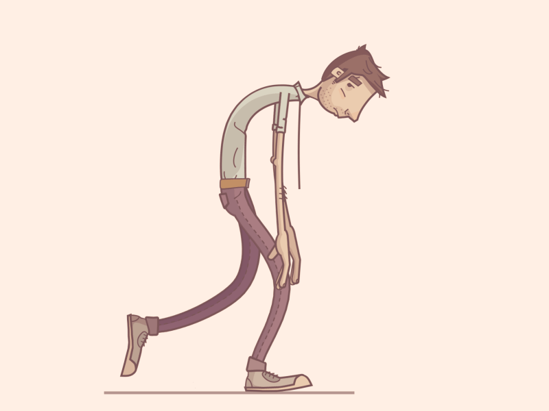

ANXIETY DISORDER
Typical indications and symptoms of anxiety include:
- Feeling tense, uneasy, or restless
- Feeling as though there's imminent danger, terror, or disaster
- Experiencing an elevated heart rate
- Fast breathing (hyperventilation)
- Perspiring
- Shuddering
- Feeling worn down or feeble
- Difficulty focusing or thinking about anything other than the current concern
- Not getting enough sleep
- Having digestive issues (GI issues)
- Having trouble putting concern in check
- The desire to stay away from situations that make you anxious
MAJOR DEPRESSIVE DISORDER
People usually experience more than one episode of depression, even if it may only happen once in their lifetime. Symptoms during these episodes can happen almost every day for the most of the day and can include:
- Sadness, tears, emptiness, or a dismal feeling
- Outbursts of rage, irritation, or frustration—even over trivial issues
- Loss of enjoyment or interest in the majority of everyday activities, including sex, hobbies, and sports
- Sleep disorders, such as excessive or insufficient sleep
- Fatigue and low energy, making even simple chores more difficult
- Decreased hunger and weight loss or increased food cravings and weight gain
- Restlessness, agitation, or anxiety
- Sluggish speech, thought, or movement
- Feelings of shame or unworthiness, an obsession with mistakes made in the past, or self-blame
- Difficulty focusing, thinking, remembering, and making judgments
- Thoughts of death, suicidal thoughts, attempts at suicide, or thoughts of dying often or again
- Unexplained health issues, such headaches or back discomfort


SCHIZOPHRENIA
Possible symptoms include:
- Illusions. These misconceptions are unfounded and untrue. For instance, you may believe that you're being hurt or harassed, that specific actions or remarks are meant for you, that you're famous or gifted, that someone else is in love with you, or that a terrible accident is going to happen. For most persons with schizophrenia, delusions are present.
- Hallucinations. Usually, these include perceiving or hearing unreal phenomena. Nonetheless, a person suffering from schizophrenia experiences all the intensity and consequences of a typical event.
- Disordered speech or thought. chaotic speech suggests chaotic thought. Questions may not be fully or partially addressed, and effective communication may be compromised. On rare occasions, speech may consist of stringing together unintelligible words, a phenomenon frequently referred to as "word salad."
- Aberrant or very disordered motor behavior. This might manifest itself in a variety of ways, ranging from erratic excitement to childish foolishness. The lack of goal-focused behavior makes activities difficult to complete. A person's behavior may include defying orders, adopting an odd or improper posture, being completely unresponsive, or moving excessively and uselessly.
- Adverse signs. This is diminished or not able to perform normally. For instance, the individual might speak monotonously, avoid making eye contact, or exhibit signs of lack of emotion by changing their facial expressions or personal cleanliness.
- In addition, the person can stop enjoying routine tasks, withdraw socially, or be incapable of enjoying themselves.